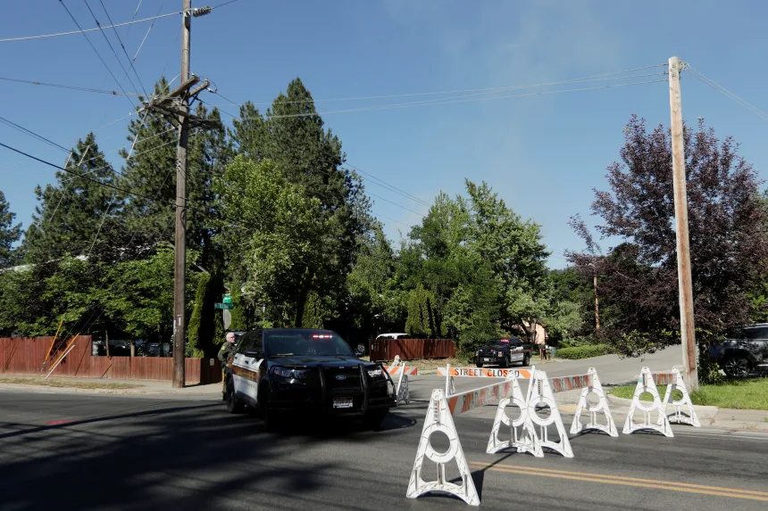
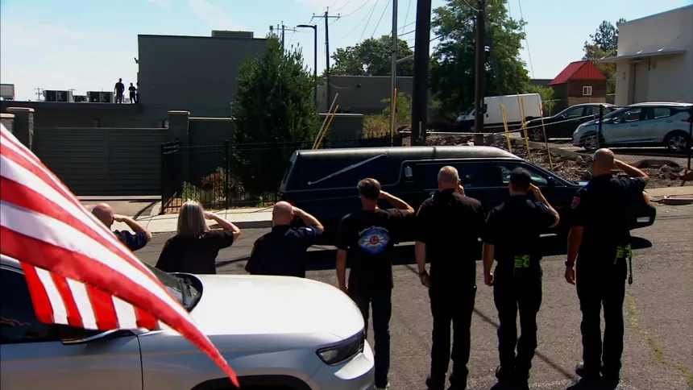

Two firefighters were fatally shot and a third is seriously injured after investigators say a lone gunman opened fire on crews responding to a brush fire on Canfield Mountain on Sunday, near Coeur d’ Alene, Idaho.
The now-deceased suspect is believed to have started the fire intentionally to draw in and target responding firefighters, officials have said.
Within an hour of being deployed, firefighters reported being shot at as the blaze continued to burn.
Various agencies, including the Spokane County Sheriff’s Office, Idaho State Police and Coeur d’Alene Police Department, were caught in an exchange of fire for about 90 minutes, according to Kootenai County Sheriff Robert Norris.
The two firefighters killed in the fray have been identified as Kootenai County Fire and Rescue Battalion Chief Frank Harwood and Coeur d’Alene Fire Department Battalion Chief John Morrison.
The injured firefighter has been identified as Coeur d’Alene Fire Department engineer Dave Tysdal, according to fire officials. He is in critical condition.

“This wasn’t an event that we had trained for,” said Coeur d’Alene Fire Department Chief Tom Greif in a Monday news conference.
“We train every day for high-risk, low-frequency events that are dangerous in our profession, but we never imagined that we would be ambushed responding to a wildland incident at a command post,” Greif said.
With nearly 70 years of fire fighting experience combined, Harwood, Morrison and Tysdal have left an indelible impact on the Coeur d’Alene community, fire officials said.
A member of Kootenai County Fire and Rescue for 17 years, Harwood was married and had two children, Chief Christopher Way said.
Harwood was also a former Army National Guard combat engineer, Way said.
“Chief Harwood was a leader in our organization. He did an amazing job. He was a shift commander and he was well respected by his shift,” Way said Monday. “This loss is felt by so many, including all of the members of his shift.”
Morrison served with the Coeur d’Alene Fire Department for more than 28 years and moved up the ranks in his department from firefighter to battalion chief, Greif said.

“These guys were hard workers,” said Gabe Eckert, president of the Coeur d’Alene Firefighters union. “They loved their families.”
Eckert shared his final memory with Morrison at Monday’s news conference, recalling a time when the pair smoked cigars during a rare lull at the fire station.
“We talked about being better fathers, we talked about being better leaders, talked about being better firefighters,” Eckert said.
“I just want to say I am so incredibly grateful that that gets to be my last memory with him.”
An engineer with the Coeur d’Alene Fire Department, Tysdal is recovering after undergoing two surgeries and is in critical condition, according to Greif.
Tysdal has been an engineer with the fire department for 23 years, Grief said.
“We thank everyone for their love and support,” a family statement read by Greif said.
“Dave is surrounded by his family, and he is able to open his eyes and the two surgeries have gone well,” the statement added.